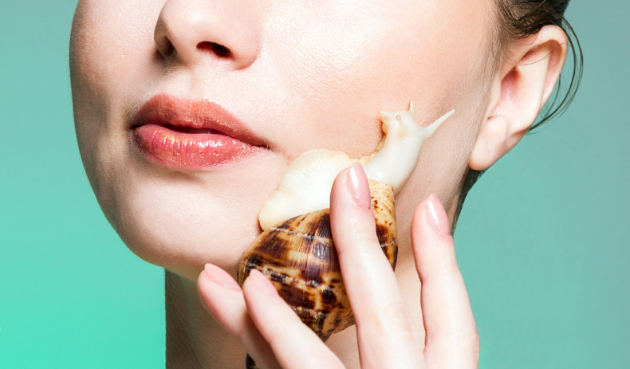

Чем полезны улитки?
Улитки — не только милые питомцы, но и источник полезных веществ для кожи
Экстракт улитки в косметике
- Слизь улиток широко используется при изготовлении косметики. В своей слизи улитки содержат аллантоин, коллаген, витамины
- Аллантоин – регенератор кожи и антиоксидант. Он эффективно замедляет старение
- Коллаген – поддерживает эластичность и упругость кожи
- Витамины А, С, Е поддерживают здоровое состояние кожи, питают, увлажняют, снимают воспалительные процессы, выравнивают и освежают цвет лица
Польза и эффект улиточного массажа
- Защита клеток от старения, заполнение межклеточного пространства коллагеном и эластином, предотвращение мелких морщинок
- Слизь улиток помогает в регенерации кожи, рассасывании рубцов, выравнивает поверхность кожи не вызывая воспаления
- Сам массаж и сокращения мускул улитки ускоряет местную микроциркуляцию, стенки сосудов получают дополнительный кальций, укрепляются их структура
- Визуально скрывает линии кожных заломов



Советы по уходу
Простые правила, чтобы улитка чувствовала себя комфортно
- В качестве домика используйте террариум, или любую емкость из нетоксичного материала, с крышкой с вентиляционными отверстиями
- Застелите дно домика грунтом: кокосовым субстратом, землей, мхом или сфагнумом
- Поставьте мисочки с овощами, фруктами, кальцием
- Поставьте купалку для улитки из нетвердых материалов, чтобы не навредить раковине при возможном падении
- Ежедневно опрыскивайте домик фильтрованной водой и делайте в нем уборку. В домике должна сохраняться чистота и влажность, чтобы улитке было комфортно